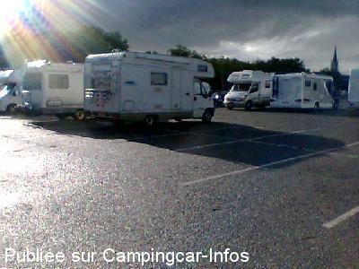

APN = Parking toléré jour/nuit de :
PAU
(N° 664)
Accès/adresse :
Place de Verdun
64000 PAU
64000 PAU
Latitude : (Nord) 43.29826° Décimaux ou 43° 17′ 53′′
Longitude : (Ouest) -0.37555° Décimaux ou 0° 22′ 31′′
Tarif : Gratuit
Services :

Tous commerces centre ville, WC publics
Autres informations :
Immense parking gratuit limitation de durée, environ 60 emplacements
Tél Office du Tourisme
+ 33 (0) 559 272 708
http://www.pau-pyrenees.com/fr/footerbar_page_quisommesnous.php

Le 17/08/2008 par jeanmichelavocat
de
PASQUIER JEAN-CLAUDE
le 19/10/2015 :
Très bien pour visiter la ville, mais ce n'est pas un parking dédié aux camping-cars et trouver une place n'est pas évident.
Très bien pour visiter la ville, mais ce n'est pas un parking dédié aux camping-cars et trouver une place n'est pas évident.
de
didlal02
le 20/08/2010 :
Le parking est juste valable pour une visite de la ville, rien n'indique qu'il est réservé aux camping- cars.
Le parking est juste valable pour une visite de la ville, rien n'indique qu'il est réservé aux camping- cars.
de
Pierredu64
le 06/11/2007 :
Bonjour. Actuellement du 27 octobre au 25 novembre 2007, il y a la super fête foraine place Verdun. Je vous conseille de vous garer sur un autre parking.
Bonjour. Actuellement du 27 octobre au 25 novembre 2007, il y a la super fête foraine place Verdun. Je vous conseille de vous garer sur un autre parking.
de
illuro
le 30/10/2007 :
Repositionnement GPS effectué ce jour. On peut stationner de part et d'autre de la rue qui arrive face à la caserne, en son milieu.
Repositionnement GPS effectué ce jour. On peut stationner de part et d'autre de la rue qui arrive face à la caserne, en son milieu.